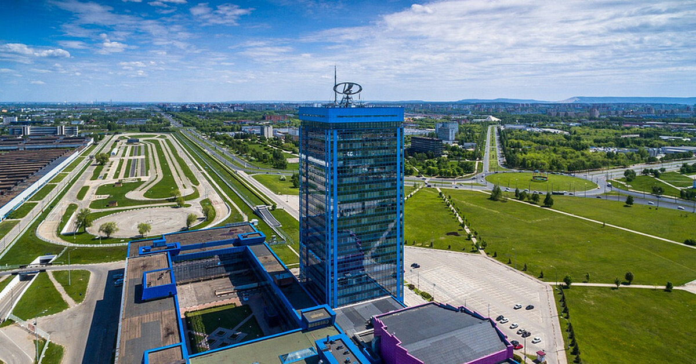

«АвтоВАЗ» — советская и российская автомобилестроительная компания. Крупнейший производитель легковых автомобилей в Восточной Европе.
Завод основан в 1966 году в городе Тольятти, где находятся штаб-квартира и основное производство. Входит в перечень системообразующих организаций России.
Производит автомобили под собственной торговой маркой Lada, до марта 2022 года также выпускал автомобили марки Nissan, Renault и Datsun. Кроме того, АвтоВАЗ поставляет другим производителям машинокомплекты для выпуска автомобилей марки Lada и их модификаций. Ранее выпускал автомобили марки ВАЗ с наименованиями «Жигули», «Спутник», «Samara», «Ока». Помимо перечисленных марок автомобилей на экспорт в некоторые страны мира поставлялись автомобили под маркой «Riva».
В 2014 году эффективная доля альянса Renault-Nissan в капитале АвтоВАЗа превысила 50 %. После рекапитализации АвтоВАЗа в 2016 году Renault стала владельцем более 50 % компании, что сделало её дочерней компанией французской корпорации. С начала 2017 года Рено начала консолидировать в отчётности показатели «АвтоВАЗа», и российский рынок стал вторым по величине для Рено, после Франции. Всего французский автоконцерн к концу 2018 года инвестировал в «АвтоВАЗ» примерно 1,9 млрд евро. В январе 2019 года Alliance Rostec Auto B.V. довела свою долю в АвтоВАЗе до 100 % и стала единственным акционером. После этого АвтоВАЗ подал заявку на делистинг акций с Московской биржи. С 5 марта 2022 года вынужден приостановить производство машин на заводе в Тольятти из-за начала введения санкций, вызвавшего отсутствие комплектующих. Через месяц производство восстановлено.
16 мая 2022 года, после ухода компании Renault из России, завод передан НАМИ.
Полное наименование с июня 2019 года — акционерное общество «АвтоВАЗ», до этого — публичное акционерное общество «АвтоВАЗ».